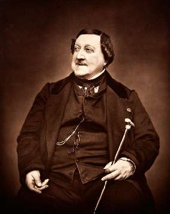

Борис Акунин
Мой календарь
Этот день, случающийся так редко, следует считать роскошью. «Роскошь» - нечто практически бесполезное, но очень приятное. Так к 29 февраля и отнеситесь, побалуйте себя. Раз в четыре года можно.
Музыка этого праздничного дня - каватина графа Альмавивы из «Севильского цирюльника». Потому что 29 февраля 1792 года родился Джоаккино Россини, который появился на свет в день-подарок и наверное поэтому умел относиться к жизни как к нескончаемому празднику.
В 37 лет гениальный композитор, говоривший, что может запросто положить на музыку хоть счет из прачечной, решил, что сочинять оперы ему надоело, есть занятия поприятнее.
И всю вторую половину жизни, еще четыре десятилетия, посвятил второй своей страсти - кулинарии. Россини был уверен, что хорошая кухня и хорошая музыка - близкие родственницы.
Новых сочинений композитор почти не писал, он был занят изобретением новых блюд. Попасть на ужин к Россини, где очень вкусно кормили и вели остроумные беседы, считалось большой удачей, а винный погреб эпикурейца славился на весь Париж.
Нет, менять профессию и род занятий сегодня не нужно. Просто проведите этот день как Россини, который уже написал «Цирюльника» и больше никому ничего не должен.